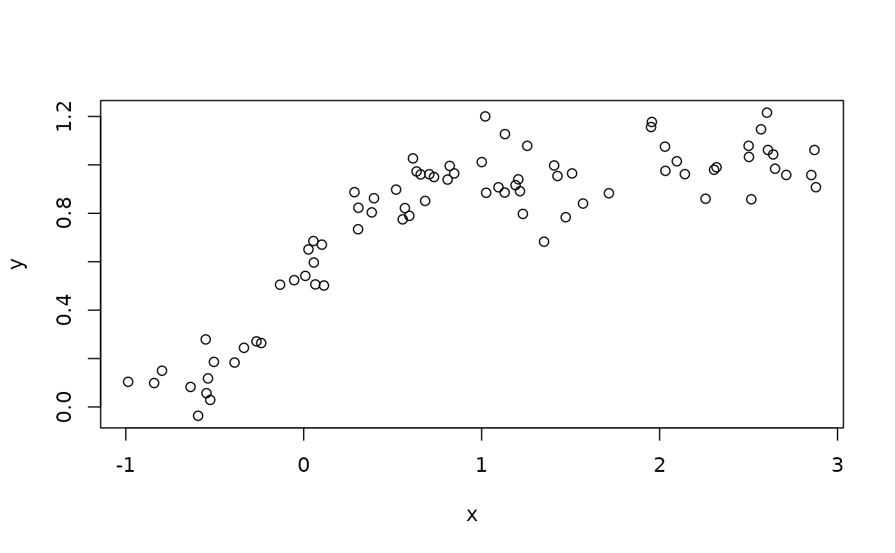
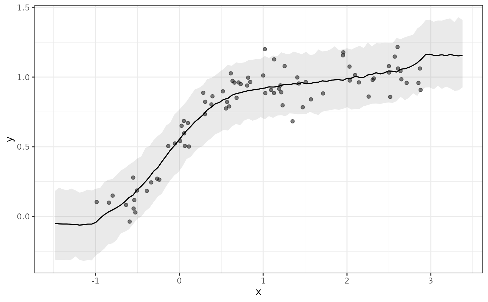
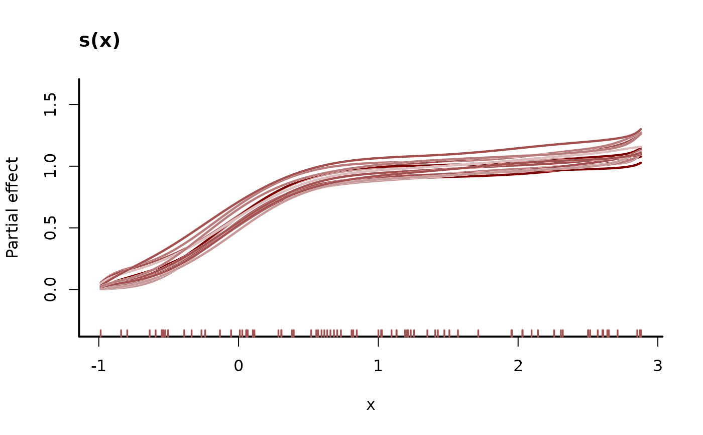
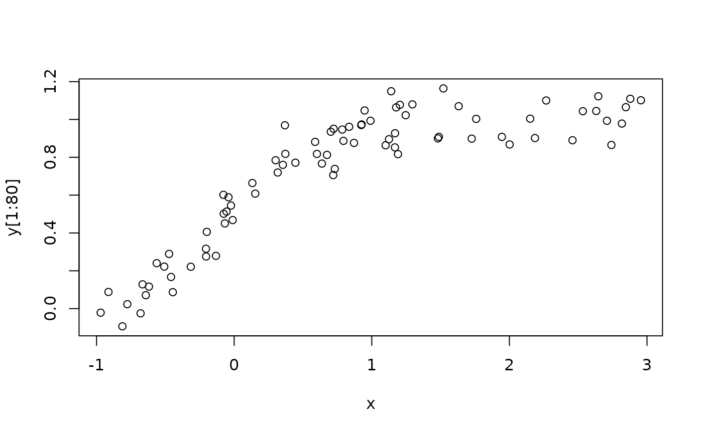
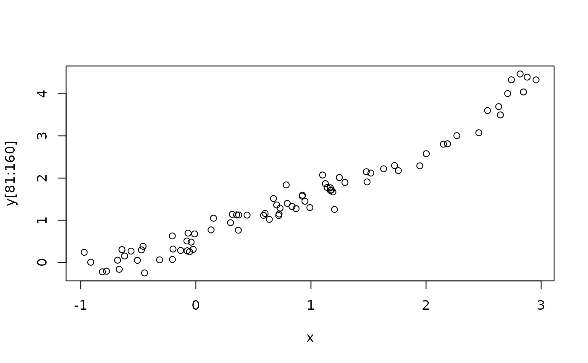
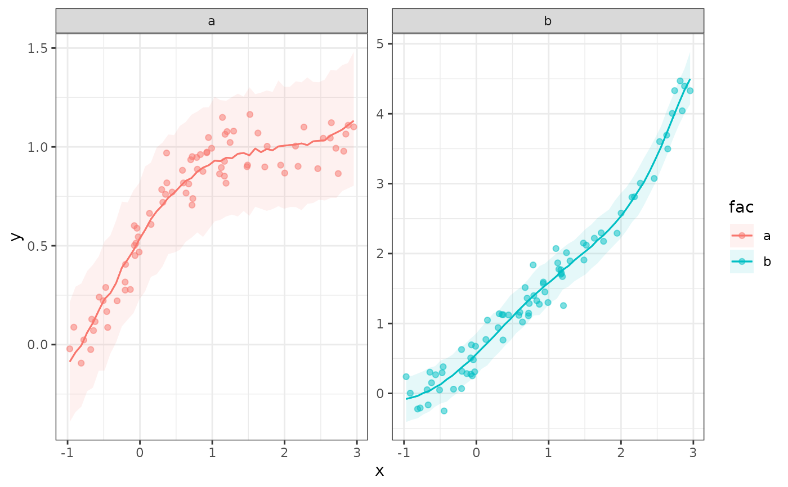
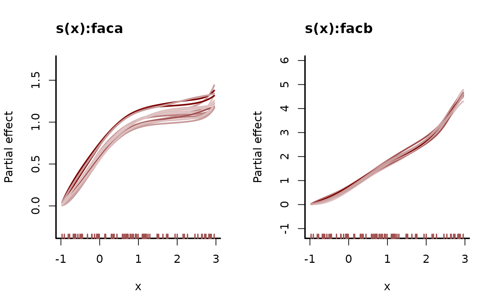

Uses constructors from package splines2 to build monotonically increasing or decreasing splines. Details also in Wang & Yan (2021).
Usage
# S3 method for class 'moi.smooth.spec'
smooth.construct(object, data, knots)
# S3 method for class 'mod.smooth.spec'
smooth.construct(object, data, knots)
# S3 method for class 'moi.smooth'
Predict.matrix(object, data)
# S3 method for class 'mod.smooth'
Predict.matrix(object, data)Arguments
- object
A smooth specification object, usually generated by a term
s(x, bs = "moi", ...)ors(x, bs = "mod", ...)- data
a list containing just the data (including any
byvariable) required by this term, with names corresponding toobject$term(andobject$by). Thebyvariable is the last element.- knots
a list containing any knots supplied for basis setup — in same order and with same names as
data. Can beNULL. See details for further information.
Value
An object of class "moi.smooth" or "mod.smooth". In addition to
the usual elements of a smooth class documented under smooth.construct,
this object will contain a slot called boundary that defines the endpoints beyond
which the spline will begin extrapolating (extrapolation is flat due to the first
order penalty placed on the smooth function)
Details
The constructor is not normally called directly,
but is rather used internally by mvgam. If they are not supplied then the
knots of the spline are placed evenly throughout the covariate values to
which the term refers: For example, if fitting 101 data with an 11
knot spline of x then there would be a knot at every 10th (ordered) x value.
The spline is an implementation of the closed-form I-spline basis based
on the recursion formula given by Ramsay (1988), in which the basis coefficients
must be constrained to either be non-negative (for monotonically increasing
functions) or non-positive (monotonically decreasing)
Take note that when using either monotonic basis, the number of basis functions
k must be supplied as an even integer due to the manner in
which monotonic basis functions are constructed
Note
This constructor will result in a valid smooth if using a call to
gam or bam, however the resulting
functions will not be guaranteed to be monotonic because constraints on
basis coefficients will not be enforced
References
Wang, Wenjie, and Jun Yan. "Shape-Restricted Regression Splines with R Package splines2."
Journal of Data Science 19.3 (2021).
Ramsay, J. O. (1988). Monotone regression splines in action. Statistical Science, 3(4), 425–441.
Examples
# \donttest{
# Simulate data from a monotonically increasing function
set.seed(123123)
x <- runif(80) * 4 - 1
x <- sort(x)
f <- exp(4 * x) / (1 + exp(4 * x))
y <- f + rnorm(80) * 0.1
plot(x, y)

# A standard TRPS smooth doesn't capture monotonicity
library(mgcv)
#> Loading required package: nlme
#> This is mgcv 1.9-1. For overview type 'help("mgcv-package")'.
#>
#> Attaching package: ‘mgcv’
#> The following objects are masked from ‘package:mvgam’:
#>
#> betar, nb
mod_data <- data.frame(y = y, x = x)
mod <- gam(y ~ s(x, k = 16),
data = mod_data,
family = gaussian())
library(marginaleffects)
plot_predictions(mod,
by = 'x',
newdata = data.frame(x = seq(min(x) - 0.5,
max(x) + 0.5,
length.out = 100)),
points = 0.5)
# Using the 'moi' basis in mvgam rectifies this
mod_data$time <- 1:NROW(mod_data)
mod2 <- mvgam(y ~ s(x, bs = 'moi', k = 18),
data = mod_data,
family = gaussian(),
chains = 2,
silent = 2)
plot_predictions(mod2,
by = 'x',
newdata = data.frame(x = seq(min(x) - 0.5,
max(x) + 0.5,
length.out = 100)),
points = 0.5)

plot(mod2, type = 'smooth', realisations = TRUE)

# 'by' terms that produce a different smooth for each level of the 'by'
# factor are also allowed
set.seed(123123)
x <- runif(80) * 4 - 1
x <- sort(x)
# Two different monotonic smooths, one for each factor level
f <- exp(4 * x) / (1 + exp(4 * x))
f2 <- exp(3.5 * x) / (1 + exp(3 * x))
fac <- c(rep('a', 80), rep('b', 80))
y <- c(f + rnorm(80) * 0.1,
f2 + rnorm(80) * 0.2)
plot(x, y[1:80])

plot(x, y[81:160])

# Gather all data into a data.frame, including the factor 'by' variable
mod_data <- data.frame(y, x, fac = as.factor(fac))
mod_data$time <- 1:NROW(mod_data)
# Fit a model with different smooths per factor level
mod <- mvgam(y ~ s(x, bs = 'moi', by = fac, k = 8),
data = mod_data,
family = gaussian(),
chains = 2,
silent = 2)
# Visualise the different monotonic functions
plot_predictions(mod, condition = c('x', 'fac', 'fac'),
points = 0.5)

plot(mod, type = 'smooth', realisations = TRUE)

# First derivatives (on the link scale) should never be
# negative for either factor level
(derivs <- slopes(mod, variables = 'x',
by = c('x', 'fac'),
type = 'link'))
#>
#> x fac Estimate 2.5 % 97.5 %
#> -0.987 a 0.345 0.1112 0.934
#> -0.987 b 0.206 0.0374 0.704
#> -0.841 a 0.523 0.3410 0.835
#> -0.841 b 0.307 0.1398 0.598
#> -0.796 a 0.562 0.3842 0.816
#> --- 150 rows omitted. See ?print.marginaleffects ---
#> 2.853 b 3.015 1.3479 4.725
#> 2.870 a 0.256 0.0343 1.079
#> 2.870 b 3.154 1.1918 5.119
#> 2.879 a 0.261 0.0316 1.121
#> 2.879 b 3.221 1.1095 5.324
#> Term: x
#> Type: link
#> Comparison: dY/dX
#>
all(derivs$estimate > 0)
#> [1] TRUE
# }